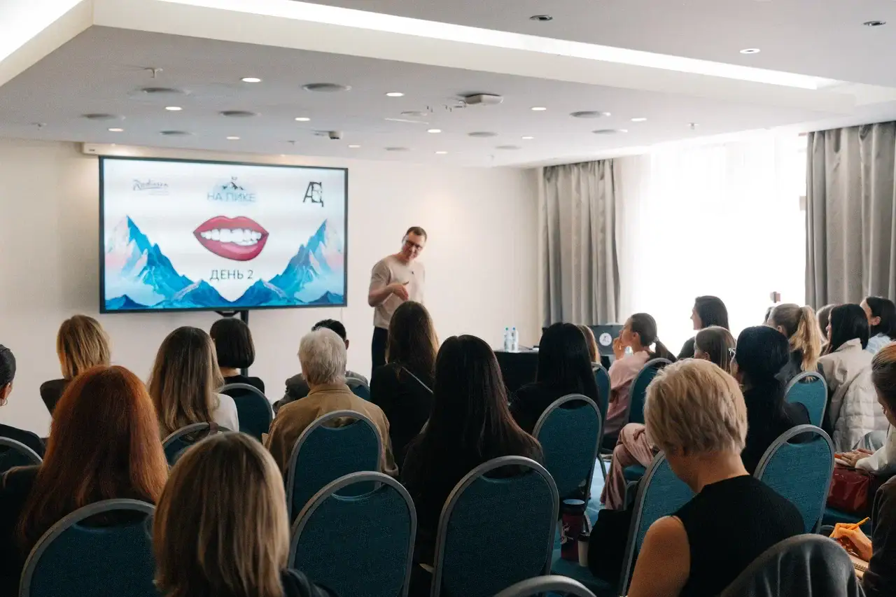
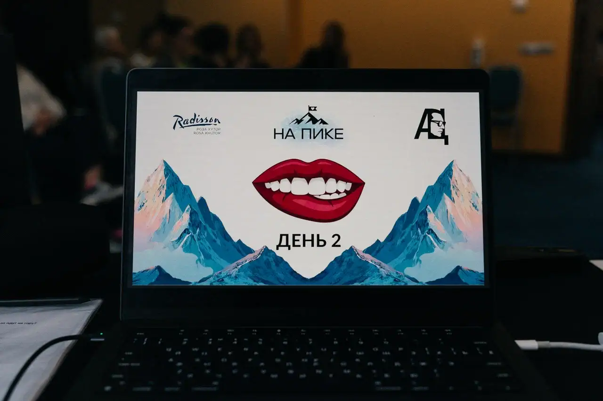
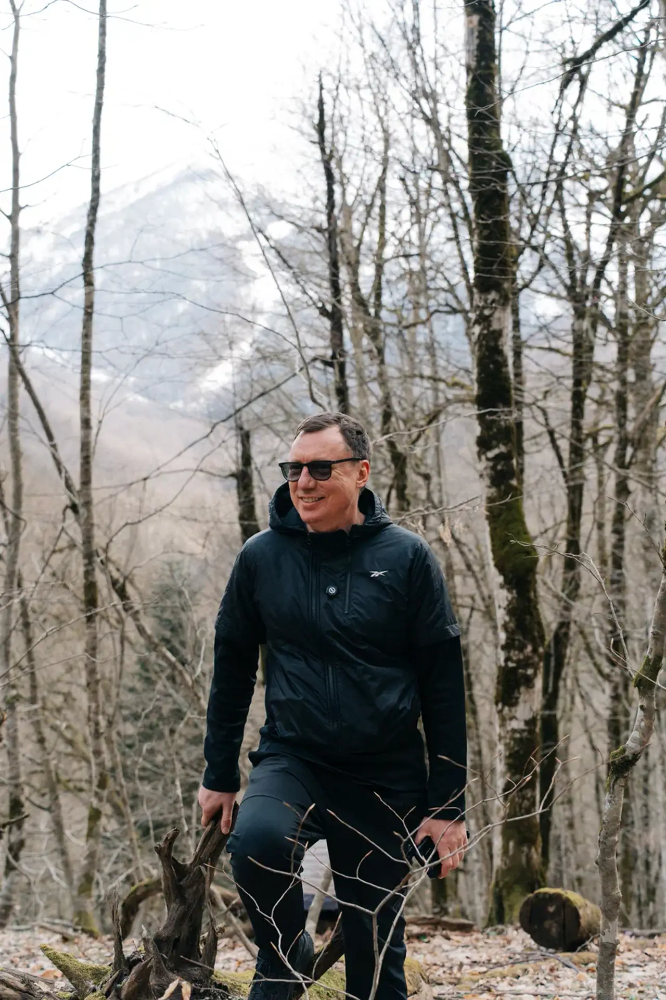
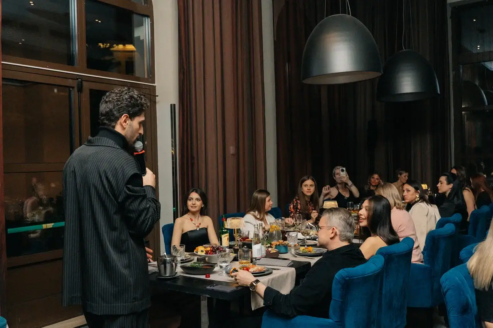
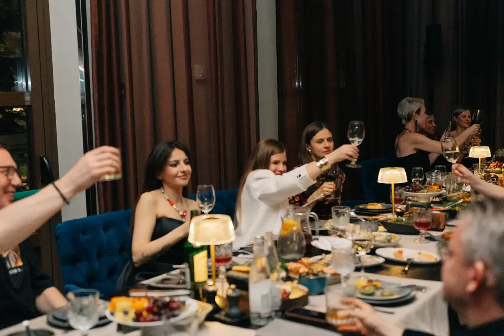
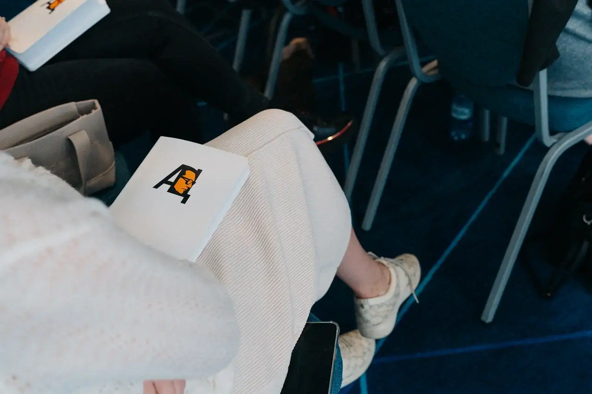
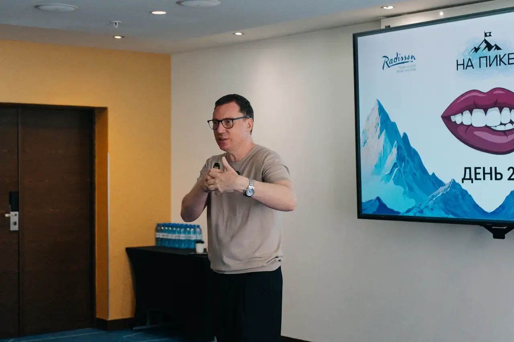

ПИК
Собраться вместе.
Подняться выше.
Корпоративный выезд команды ПИК в Radisson Rosa Khutor: тренинг, отдых в горах и программа, собранная в одно цельное событие.
Всё продумано.
От дороги до ужина.
«ПИК» — выездная программа для команды ПИК в горах Красной Поляны. SPACE собрал все точки контакта в один маршрут: обучение, отдых, общение и впечатления.
SPACE полностью организовал проект: поиск и коммуникацию с Radisson Rosa Khutor, логистику участников, питание, условия для тренинга, комфортное проживание, досуговую программу, партнёров, брендинг и гала-ужин с ведущим.
Работа, отдых
и горный воздух.
Тренинг, прогулки по Красной Поляне, комфортное проживание и гала-ужин — программа собрана так, чтобы команда переключалась, общалась и возвращалась к работе с новой энергией.

Вечер, который
запоминается.
До начала встречи.
В центре события.






Одна команда.
Весь путь события.
Мы взяли на себя весь проект: площадку и отель, коммуникацию с Radisson Rosa Khutor, трансферы и логистику участников, питание и размещение, техническое сопровождение тренинга, досуг, партнёрские интеграции, брендинг и гала-ужин с ведущим.
Каждый блок — от первого письма отелю до финального ужина — был частью единого сценария комфортного выезда для команды ПИК.
СЛЕДУЮЩИЙ ПРОЕКТ